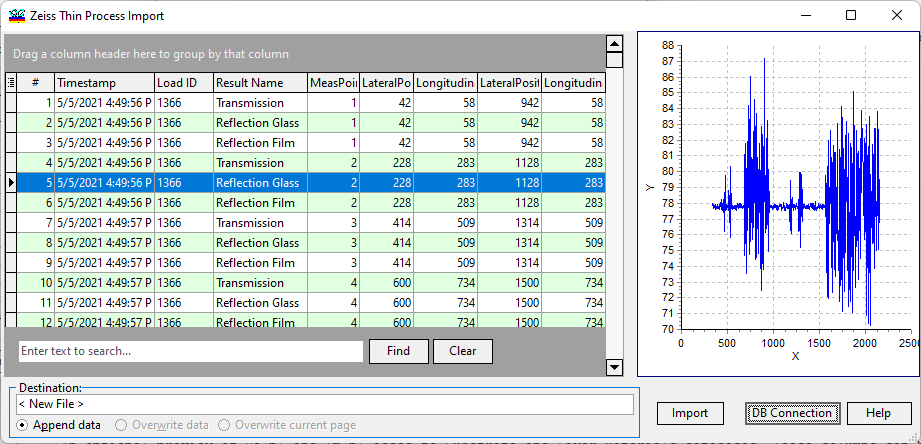

Zeiss ThinProcess
The content of the SQL database containing Zeiss ThinProcess measurements is displayed in the grid view. You can apply various filters and group the data by columns in multiple ways, which greatly simplifies the management of large databases. A preview of the currently selected measurement is shown in the right plot panel.

In the Destination field, the name of the data file being edited and the designated destination page are indicated. You can choose to append data, overwrite data in the existing file, or overwrite only the current page. Additionally, it is possible to change the destination to any of the opened Measurement editors or create a new one.
When the Import button is pressed, the content of the current trace will be transferred to the selected Measurement file.
DB Connection parameters are configured using the supplementary dialog Thin Process Login. The default connection parameters are set according to Zeiss ThinProcess specifications and need to be modified in case of a customized database configuration.